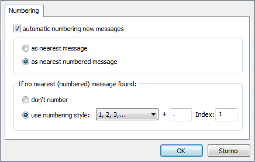

Message Numbering
Message numbering allows users to enumerate all types of message shapes (left, right, lost, found).
You can enumerate all messages on the active page (if no messages are selected) or the selection.
Enable message numbering
By pressing Message numbering button , via menu Check->Drawing->Message numbering->Message numbering or by using hotkey Ctrl+Alt+E the dialog with options will be shown:

You can choose:
- specific numbering type (numbers, letters, capital letters, romans)
- starting index (1-9999 for number, letters and capital letters and 1-3999 for romans)
- and additional string following the index such as ".", "-", … (max 4 chars). A space between the index and the message label is added automatically.
When the OK button is pressed, messages are numbered according to their positions on the page from left to right and then from top to bottom.
Already numbered messages will be overwritten by new numbering.
Disable message numbering
Numbering can be deleted by pressing Delete numbering button  on the toolbar, via menu
on the toolbar, via menu Check->Drawing->Message numbering->Delete numbering or by using hotkey Ctrl+Alt+D.
Using Delete numbering on selection causes other messages indexes will be recomputed.
If no selection is used all numbering indexes will be deleted.
Numbering group selection
When a group of messages is numbered, user can select it by right-click on any of numbered messages from group and choose Select numbering group from context menu. Example is shown in the following picture:
Auto numbering
New messages can be automatically numbered after they are dropped on the page. Specific behavior can be set via menu Check->Drawing->Settings, tab Numbering. Following dialog will be shown:

Options are:
automatic numbering new messages
- sets whether auto numbering is enabled, otherwise all other options are disabled.
as nearest message
- new messages will be numbered according to the group of the closest message on the active page. All message indexes in the current group will be recounted. If the closest message isn't numbered, new one won't be either.
as nearest numbered message
- new messages will be numbered according to the closest numbered message on the active page. If there are no numbered messages on the active page you can choose between:
don't number
- don't number new messages if there are no numbered messages on the page.
use numbering style
- use specific numbering style if there are no numbered messages on the page.